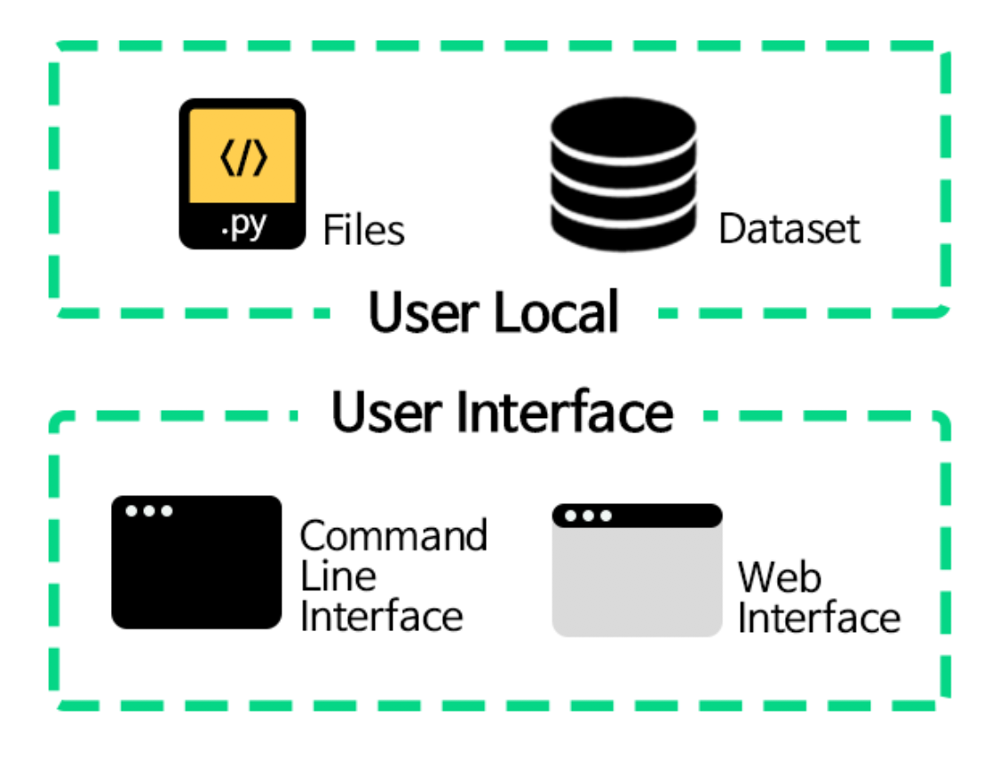

Welcome to NSML Documentation¶
NSML is a machine learning as a service (MLaaS), a cloud platform, designed to eliminate unnecessary work in research and make efficient use of GPU resources.
NSML plays a role in facilitating quick and easy R&D in the design of deep learning algorithms. Simply by using the CLI and Web interface, AI learning can be done without complicated setting and monitoring progress.
This document will guide you through a variety of information to help you become familiar with NSML. You can find NSML concepts, commands, and notes. We hope that NSML will be a great help for your work during this Hackathon.
Language version¶
NSML documentation is organized in two languages. Document automatically go to each language pages that match your browser language setting. Please go to the desired version via the link below.
NSML Intro¶
How does NSML work? Intro part guides you through the principles and concepts of NSML. If you want to know how to use NSML first, skip the following and go to the next part, Getting Started part. However, if you want to use NSML in earnest, you should familiarize yourself with the contents of this page.
Session and model¶
In NSML, the concept of session continues to emerge. We call a unit of work where your code is executed as
session. And in one session, you can run multiple AI jobs you want withmodel. These models are numbered and calledcheckpointand stored continuously.When you run NSML, checkpoint is generated whenever you use a function called nsml.save in a file (including entry file) created locally. Alternatively, checkpoint is created each time you click save button in the web interface during the session.
For each
session, you can allocate GPU, CPU, RAM. If you use these resources too much, other users will not be able to use those resources, so you should always checksessionstatus to get appropriate resources. If GPU is allocated and running but there is at least 1 GPU with zero usage for one hour, the status is displayed as zombie. Please be careful not to make zombiesession. If the GPU is used again, thesessionescapes from the zombie state.
Prerequisites and User Interface¶
To use NSML, we have to know two things to prepare and two user interfaces.
User Local is required in local environment.
Files : These are the files that contain what is called
entry file(e.g. main.py), the first starting point. A file that lists the commands and ML models used in NSML. You can code the file by referring to the nsml library section.Dataset : A dataset that NSML uses to run sessions.The dataset for the Hackathon is already uploaded to NSML.
The User Interface is the tool you use to utilize NSML.
Command Line Interface(CLI) : An interface that communicates with NSML and commands. Windows cmd, Mac OS terminal. After downloading NSML and setting, you can use NSML command.
Web interface : You can see the progress and visualization of sessions which available at https://ai.nsml.navercorp.com.
Now let’s look at how to use NSML on the next page.